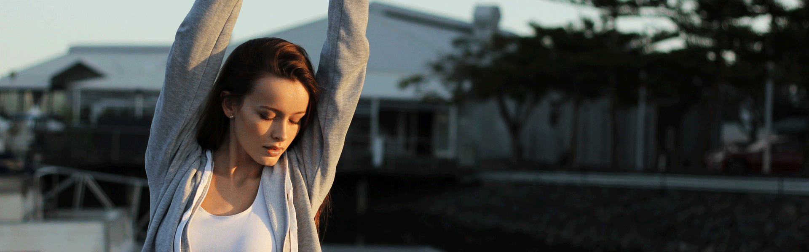
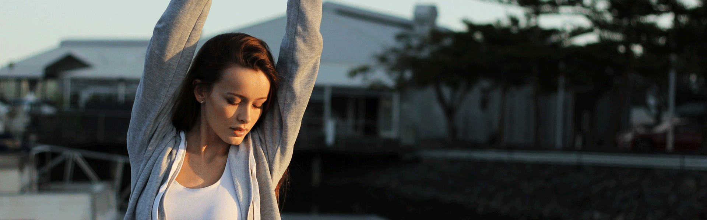

- 1、健身前60分钟内，不要吃不易消化的食品，比如油脂类、肉类等，可以适当的吃碳水化合物
- 2、运动前一定要做好充分的热身，使身体和心理得到适应反应，让身体更快进入训练状态
- 3、如果运动超过60分钟，或运动强度剧烈，需要补充运动饮料和水，这样可以防止因为出汗过多
- 4、运动后要进行，至少5-10分钟左右的全身肌肉拉伸，这样可以降低第二天的迟发性肌肉疼痛
- 5、增肌的朋友，在健身后需要补充高蛋白食物，比如鸡蛋、牛肉、鸡胸肉、蛋白粉等，这样可以更好的提高训练效果
- 6、减脂的朋友需要适当降低热量摄入，在训练中要注意补水，绝对不能不喝水，身体缺水不利于机体代谢
- 7、健身时一定要穿运动服和运动鞋，这不仅可以提升运动表现，而且可以降低运动受伤的风险
- 8、酒后禁止健身训练，酒精本身就是加速血液循环
- 9、训练后30分钟内尽量不要抽烟，因为血液循环会加速促进尼古丁的吸收，健身还是不要抽烟的好
- 10、力量训练时不要憋气，动作节奏控制要慢，注意力集中到目标肌群，体会肌肉的发力
- 11、训练后不要立即进行淋浴，等汗消去再淋浴，淋浴水温不要过高，以免身体免疫下降
- 12、运动强度的大小因人而异，不要与人盲目攀比，运动项目、动作没有所谓的最好，只有适合自己的才是最好的
- 13、锻炼结束后，请将器械放回原位

- 山西盈瑞科技有限公司 备案号：晋ICP备17006549号—3
- 联系电话：17634068219 0351—7891032
- QQ：3849009147 地址：山西省太原市盛世华庭四层
分享:


 
